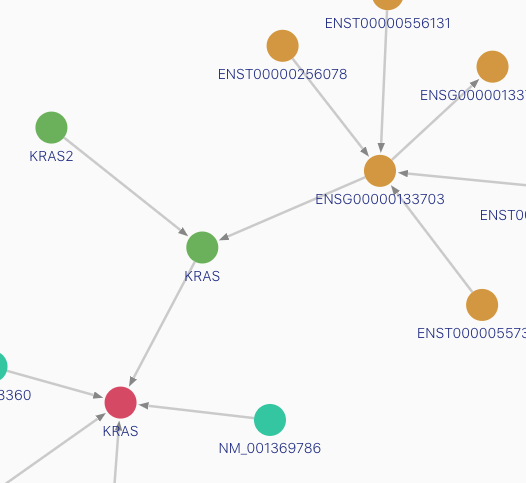

Repositories
The platform has two main components: a graph knowledge base (GraphKB), and a reporting application (IPR). However these are modularized across several repositories listed below.
-
GraphKB API

GraphKB REST API and Graph Database. The GraphKB database is implemented using OrientDB. It is a graph database which is used to store variants, ontologies, and the relevance of this terms and variants. The KB uses strict controlled vocabulary to provide a parseable and machine-readable interface for other applications to build on. The API is a REST API built on node/express.
-
GraphKB client

The GraphKB client is the front-end web client for the GraphKB project. It is built using React.js and webpack. The client is used to explore and manage content within GraphKB.
-
GraphKB python adaptor
Python adapter package for querying the GraphKB API. See the related user manual for instructions on incorporating this into custom scripts.
-
IPR API

The Integrated Pipeline Reports (IPR) REST API manages data access to the IPR database. The API is responsible for storing and server all data for reports.
-
IPR client

The IPR client is front-end web application which consumes data from the IPR API. The primary function is the production and management of genomic reports.
-
IPR python adaptor

Python adapter for generating reports uploaded to the IPR API. This python tool takes in variant inputs as tab-delimited files and annotates them using GraphKB. The resulting output is uploaded to IPR as a report. Additional report content such as images and metadata can be passed to be included in the report upload. See the related user manual for additional information.
-
GraphKB Data Loaders
GraphKB loaders is responsible for all data import into GraphKB. Automatic Import modules are provided for a variety of external ontologies and knowledgebases such as: Ensembl, Entrez Genes, RefSeq, HGNC, Disease Ontology, NCI Thesaurus, CIViC, DoCM, etc.
-
GraphKB Parser
A package for parsing and recreating HGVS-like variant notation used in GraphKB. This is used by both the API and Client applications. Try it out online with RunKit
-
GraphKB Schema

The GraphKB Schema package defines the vertex and edge classes in the DB. It is used as a dependency of both the API and client applications.